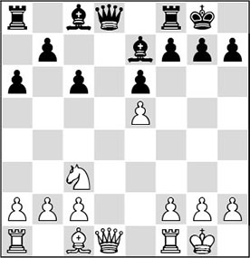
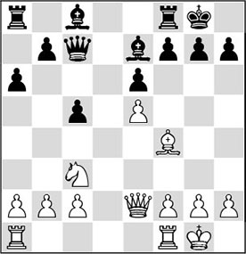
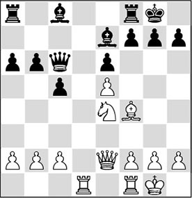
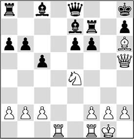
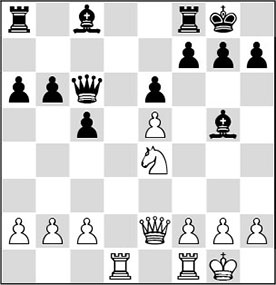
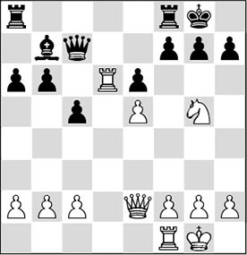
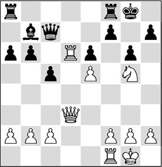
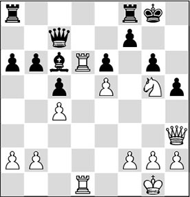

Chapter 18
Quiz: open file
18.1 Activity above all?
Steinitz’s Table deals with purely strategic features, but every player knows that in most games tactics play an important part. Also, the fact that in one position there are different factors influencing each other does not make it easier to make a correct assessment.
Still, it is good to realize how the synthesis between strategy and tactics is established. Therefore, we must always consider the activity of the pieces on both sides. A player may have a fantastic pawn formation, control a beautiful open file and possess a strong square, but if he goes down to a direct mating attack on the other side of the board, all his strategic advantages come to naught.
In every position it is important to look at the activity of the pieces, and how it can be increased – or how your opponent’s activity can be decreased! A piece that is not active should be mobilized in one way or another. Only if a piece participates optimally in the battle, you will be able to say that this piece is of use to you.
This clear-headed impression of things is given by the Romanian grandmaster Mihai Suba in his book Dynamic Chess Strategy, in which he argued that on each move a piece should be developed, and preferably to squares that are available on the basis of the pawn formation. With this thought at the back of your mind, you can try to guess the moves in the following game, where the open file is the main theme. In this game, we particularly have to consider how we can use the available tactics to obtain strategic advantages. The opposite also applies: if we obtain a strategically winning position, we have to finish off with tactics.
18.2 Quiz
In this chapter, we focus on an exercise with the theme ‘activity’. In the following game, you can try to make difficult strategic decisions yourself with the help of the game of question and answer that we also played in Chapter 13. As in that chapter, you can test yourself by covering the text with a piece of paper.
1.♘f3 c5 2.e4
By transposition, the Sicilian has appeared on the board.
2…e6 3.♘c3 ♘c6 4.♗b5 ♘ge7 5.0-0 a6 6.♗xc6 ♘xc6 7.d4 cxd4 8.♘xd4 ♗e7
Instead of the text, 8…♕c7 is the most popular move.
9.♘xc6 dxc6
9…bxc6 10.e5 gives White an attractive edge, since the d6-square has become weak. 10…d5 11.exd6 is not very attractive for Black either.
10.e5 0-0
Exchanging queens would have been a wiser choice.

11.♕e2
Answer to Question 1:
For White it is important to keep the queens on the board. He opts for placing the queen on e2, so that his pawn on e5 remains protected in any case.
An attractive, rather more aggressive idea was to continue with 11.♕g4. White would also be better in that case.
11…♕c7 12.♗f4
This is the best position for the bishop. The pawn on e5 is ‘overprotected’, so that White has a free hand to bring the rest of his pieces into play.
12…c5

13.♘e4
Answer to Question 2:
With this move White activates his knight, which he hopes to employ on the kingside later on. He has the extra possibility of exploiting the d6-square.
13…♕c6?!
A dubious move: for the moment Black does not do anything for his development, and he will pay dearly for that later on.
14.♖ad1
Of course, White brings his queen’s rook into play as quickly as possible.
14…b6

15.♗g5!
Answer to Question 3:
White would be happy to swap the dark-squared bishops, as that way he will create a ‘springboard’ for his other pieces on the open d-file.
15…♗xg5
A crucial point is what would follow after 15…f6, as in this variation Black refuses to allow the exchange of his dark-squared bishop. The following liquidation is more or less forced: 16.exf6 gxf6 17.♗h6 ♖f7 18.♕g4+ ♔h8 19.♕h5 ♕e8.

Answer to Question 4:
If you have discovered the following tactical blow, you have good tactical vision! Indeed, 20.♖d8!! wins for White: 20…♗xd8 (it is clear that White wins easily after 20…♕xd8 21.♕xf7 ♕g8 22.♕xe7) 21.♘d6 ♕d7 (also after 21…♕e7 22.♘xf7+ ♔g8 23.♖d1! ♗c7 24.♕g4+ ♔xf7 25.♕g7+ ♔e8 26.♕g8+, Black is artistically mated) 22.♘xf7+ ♔g8, and now 23.♕g4+! ♔xf7 24.♕g7+ ♔e8 25.♕f8 produces a beautiful mating picture.

16.♖d6!
Answer to Question 5:
Right! In chess you are not obliged to recapture immediately. It is always good to have an open eye for alternatives, and with this intermediate move White accomplishes a great deal. After 16.♘xg5 ♗b7, his advantage would largely evaporate, as Black will always get a rook on the d-file in time.
16…♕c7 17.♘xg5 ♗b7
The knight could not be kicked away with 17…h6 in view of the double attack 18.♕e4.

18.♕d3!
Answer to Question 6:
With this move White not only achieves domination of the d-file by with gain of tempo, he also forces an ugly weakening.
18…g6

19.♖d1
Answer to Question 7: Possession of the d-file is of crucial importance. Not only because this is the only open file on the board, but especially because the rook on d6 will be able to play an important role in this position.
19…♗d5
Things go from bad to worse with Black. Somewhat more tenacious was 19…♕e7, after which 20.f4 is the best continuation.
20.c4 ♗c6

21.♕h3!
Answer to Question 8:
With this move, White forces a second, even uglier weakening, and also the queen stands very well on this square for yet another reason.
21…h5

Answer to Question 9:
22.♘xe6!
With this pseudo-sacrifice White blows the black pawn structure to smithereens. He will win the piece back with interest. After 22…fxe6 23.♕xe6+ ♕f7 (23…♔h8 24.♖xc6) 24.♕xg6+ ♕xg6 25.♖xg6+ ♔h7 26.♖xc6, White has won (more than) enough material to convince Black to call it a day.